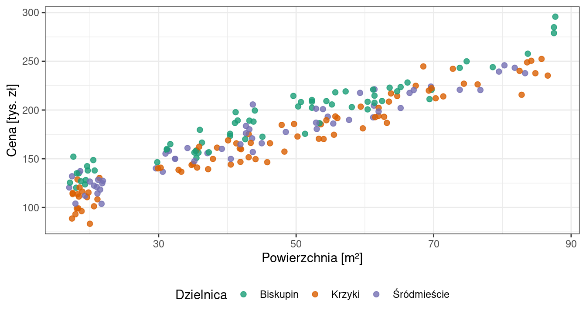
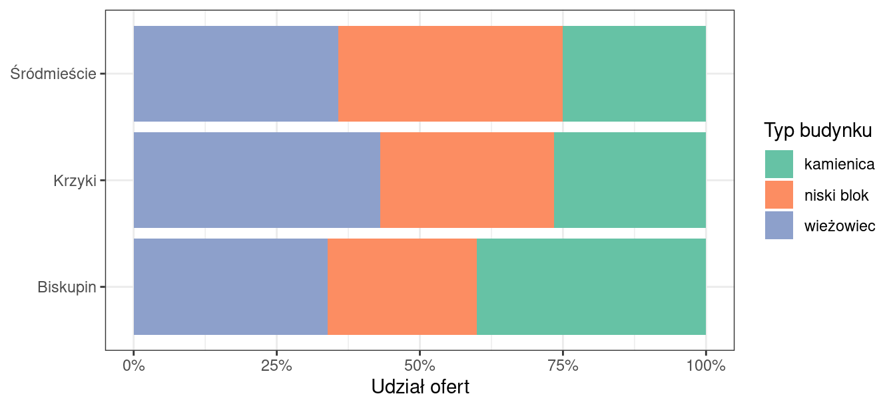

Raport przygotowano na danych o cenach mieszkań we Wrocławiu. Zasady, według których został napisany, oraz wskazówki do samodzielnego raportu omawia rozdział 20.
Pokaż kod
library(dplyr) # przetwarzanie danychlibrary(ggplot2) # wykresylibrary(ggridges) # wykresy grzbietowelibrary(e1071) # skośność i kurtozalibrary(knitr) # tabele w raporciemieszkania <-read.csv("dane/daneMieszkania.csv")# zmienna pochodna: cena jednego metra kwadratowego# oraz zapis nazw z polskimi znakami - wyłącznie na potrzeby prezentacji wynikówmieszkania <- mieszkania |>mutate(cena_m2 = cena / powierzchnia,dzielnica =recode(dzielnica, "Srodmiescie"="Śródmieście"),typ.budynku =recode(typ.budynku, "wiezowiec"="wieżowiec"))
1 Wprowadzenie
Cena mieszkania jest wypadkową wielu czynników: położenia, powierzchni, liczby pokoi, typu i wieku budynku, standardu wykończenia oraz otoczenia. Część z nich - jak lokalizacja - jest wiązana z mieszkaniem na stałe, inne można zmienić. Analizy rynku nieruchomości zwykle zaczynają się od pytania, jak bardzo ceny różnią się między obszarami miasta i czy różnice te utrzymują się po uwzględnieniu cech samych mieszkań.
Porównywanie cen całkowitych bywa przy tym mylące. Mieszkanie dwupokojowe i czteropokojowe różnią się ceną nawet wtedy, gdy metr kwadratowy kosztuje w nich tyle samo. Jeśli w jednej dzielnicy przeważają mieszkania duże, a w drugiej małe, różnica średnich cen powie więcej o strukturze zabudowy niż o tym, gdzie mieszkanie jest droższe. Dlatego przy porównywaniu obszarów stosuje się zwykle cenę przeliczoną na metr kwadratowy.
Celem analizy jest ustalenie, czy ceny mieszkań różnią się między trzema dzielnicami Wrocławia - Biskupinem, Krzykami i Śródmieściem - oraz czy ewentualne różnice utrzymują się po uwzględnieniu cech samych mieszkań.
Cel ten rozbito na trzy pytania szczegółowe:
Jak wygląda rozkład cen mieszkań i czy jest symetryczny? Od tego zależy, która miara położenia właściwie opisuje typowy poziom cen.
Czy różnice między dzielnicami, widoczne w cenach całkowitych, utrzymują się po przeliczeniu ceny na metr kwadratowy?
Czy różnice te można wiązać z innymi cechami mieszkań zapisanymi w zbiorze - typem zabudowy i wielkością mieszkania?
2 Dane
Analizę wykonano na zbiorze daneMieszkania.csv, zawierającym informacje o 200 mieszkaniach wystawionych na sprzedaż w trzech dzielnicach Wrocławia. Zbiór pochodzi z pakietu Przewodnik, towarzyszącego podręcznikowi P. Biecka Przewodnik po pakiecie R (Biecek, 2017), gdzie występuje pod nazwą mieszkania. Ma on charakter dydaktyczny i nie pochodzi z rejestru transakcji - wartości odpowiadają cenom ofertowym.
Każdy wiersz zbioru opisuje jedno mieszkanie i zawiera pięć zmiennych:
cena - cena ofertowa mieszkania [zł],
powierzchnia - powierzchnia użytkowa [m²],
pokoi - liczba pokoi,
dzielnica - Biskupin, Krzyki albo Śródmieście,
typ.budynku - kamienica, niski blok albo wieżowiec.
Liczba ofert w dzielnicach jest nierówna: 65 na Biskupinie, 79 na Krzykach i 56 w Śródmieściu. W zbiorze nie ma braków danych - wszystkie 200 rekordów jest kompletnych, więc nie trzeba było podejmować decyzji o sposobie ich potraktowania.
Zbiór obejmuje wyłącznie oferty z trzech wymienionych dzielnic i nie stanowi próby losowej z całego rynku wrocławskiego. Wyniki opisują więc te trzy obszary, a nie miasto jako całość. Nierówne liczebności grup nie przeszkadzają w porównywaniu statystyk opisowych, trzeba jednak pamiętać, że oszacowania dla najmniej licznej dzielnicy są obarczone największą niepewnością.
3 Metody
Dane wczytano z pliku csv i sprawdzono ich strukturę oraz kompletność. Na potrzeby analizy utworzono zmienną pochodną cena_m2, będącą ilorazem ceny mieszkania i jego powierzchni. Nazwy Srodmiescie oraz wiezowiec zapisano z polskimi znakami wyłącznie na potrzeby prezentacji wyników - w pliku źródłowym pozostały bez zmian.
Zróżnicowanie cen opisano za pomocą miar położenia (średnia arytmetyczna, mediana, kwartyle) oraz miar rozproszenia (odchylenie standardowe, rozstęp kwartylowy, zakres). Kształt rozkładu oceniono na podstawie histogramu z nałożoną krzywą gęstości oraz współczynników skośności i kurtozy nadmiarowej. Porównanie dzielnic oparto na statystykach opisowych liczonych w grupach oraz na wykresie grzbietowym, pokazującym pełne rozkłady obok siebie. Strukturę typów zabudowy przedstawiono na wykresie udziałów.
Przy rozkładach asymetrycznych średnia arytmetyczna przestaje opisywać wartość typową, dlatego cenę metra kwadratowego scharakteryzowano równolegle średnią i medianą - rozbieżność między nimi sama w sobie niesie informację o kształcie rozkładu. Do porównania dzielnic wybrano wykres grzbietowy zamiast pudełkowego, ponieważ pokazuje on pełny kształt rozkładu, w tym położenie i liczbę wierzchołków, a nie tylko pięć wybranych statystyk.
Obliczenia wykonano w środowisku R. Wykorzystano pakiety: dplyr (przetwarzanie danych i statystyki w grupach), ggplot2 (wykresy), ggridges (wykresy grzbietowe), e1071 (skośność i kurtoza) oraz knitr (tabele).
4 Wyniki
4.1 Ceny mieszkań ogółem
Ceny ofertowe analizowanych mieszkań mieściły się w przedziale od 83,3 tys. zł do 295,8 tys. zł (tab. 1). Średnia cena wyniosła 175,9 tys. zł, a mediana 174,9 tys. zł - obie wartości są niemal identyczne, co wskazuje na rozkład zbliżony do symetrycznego. Potwierdza to współczynnik skośności równy 0,11. Połowa ofert mieściła się w przedziale od 143,3 do 208,7 tys. zł, a odchylenie standardowe wyniosło 43,1 tys. zł.
Zupełnie inaczej wygląda rozkład ceny przeliczonej na metr kwadratowy. Mediana wyniosła 3 893 zł/m², ale średnia była wyraźnie wyższa - 4 267 zł/m². Różnica między tymi miarami oraz dodatnia skośność (1,16) wskazują na rozkład asymetryczny prawostronnie: większość mieszkań mieści się w przedziale 3-5 tys. zł/m², ale dwadzieścia pięć ofert przekracza 6 tys. zł/m², a najdroższa sięga 8 643 zł/m². Połowa ofert mieściła się w przedziale od 3 341 do 4 786 zł/m², co daje rozstęp kwartylowy równy 1 445 zł/m² - przy medianie 3 893 zł/m² jest to zróżnicowanie znaczne.
Tabela 1: Statystyki opisowe ceny mieszkania oraz ceny jednego metra kwadratowego (N = 200).
Minimum
Kwartyl 1
Mediana
Średnia
Kwartyl 3
Maksimum
Odch. std.
Rozstęp kw.
Skośność
Cena [zł]
83 279.9
143 304.1
174 935.0
175 934.0
208 740.7
295 761.8
43 078.7
65 436.7
0.1
Cena [zł/m²]
2 604.5
3 340.6
3 892.8
4 266.7
4 785.9
8 643.0
1 237.6
1 445.3
1.2
Asymetrię rozkładu ceny metra kwadratowego dobrze widać na histogramie z nałożoną krzywą gęstości (ryc. 1). Rozkład ma jeden wyraźny wierzchołek w okolicach 3,5 tys. zł/m² i długi ogon rozciągający się w stronę wartości wysokich. Oznacza to, że typowe mieszkanie kosztuje istotnie mniej, niż sugerowałaby średnia - w takiej sytuacji miarą lepiej opisującą zbiór jest mediana.
Rycina 1: Rozkład ceny jednego metra kwadratowego mieszkania. Słupki przedstawiają liczbę ofert w przedziałach co 250 zł, linia - wygładzoną krzywą gęstości.
4.2 Czy cena zależy od wielkości mieszkania
Przeliczenie ceny na metr kwadratowy ma sens tylko wtedy, gdy cena rzeczywiście rośnie wraz z powierzchnią. Wykres rozrzutu (ryc. 2) potwierdza, że tak jest: punkty układają się wzdłuż wyraźnej linii rosnącej, a zależność jest widoczna w każdej z trzech dzielnic. Mieszkania o powierzchni 20 m² kosztują zwykle 100-130 tys. zł, a te powyżej 80 m² - ponad 250 tys. zł.
Wykres pokazuje jednocześnie rzecz istotną dla dalszej analizy: mieszkania w trzech dzielnicach nie różnią się wyraźnie wielkością. Mediana powierzchni wynosi 45,1 m² na Biskupinie, 44,1 m² na Krzykach i 43,0 m² w Śródmieściu. Różnice średnich cen całkowitych nie wynikają więc z tego, że gdzieś sprzedaje się większe mieszkania.
Pokaż kod
ggplot(mieszkania, aes(x = powierzchnia, y = cena /1000, colour = dzielnica)) +geom_point(size =1.9, alpha =0.8) +scale_colour_brewer(palette ="Dark2") +labs(x ="Powierzchnia [m²]", y ="Cena [tys. zł]", colour ="Dzielnica") +theme_bw() +theme(legend.position ="bottom")

Rycina 2: Zależność ceny mieszkania od jego powierzchni, z podziałem na dzielnice.
4.3 Porównanie dzielnic
Po przeliczeniu na metr kwadratowy różnice między dzielnicami pozostają widoczne (tab. 2). Najwyższą medianę ceny metra kwadratowego odnotowano na Biskupinie (4 106 zł/m²), nieco niższą w Śródmieściu (4 009 zł/m²), a najniższą na Krzykach (3 573 zł/m²). Różnica median między Biskupinem a Krzykami wynosi 533 zł/m², czyli około 15% wartości niższej z nich.
Zróżnicowanie wewnątrz dzielnic jest przy tym większe niż różnice między nimi. Rozstęp kwartylowy wynosi od 1 301 zł/m² na Krzykach do 1 657 zł/m² w Śródmieściu, podczas gdy największa różnica median to wspomniane 533 zł/m². Również zakresy cen są zbliżone: w każdej dzielnicy najtańsza oferta mieści się w przedziale 2,6-3,0 tys. zł/m², a najdroższa przekracza 7 tys. zł/m².
Tabela 2: Cena jednego metra kwadratowego w podziale na dzielnice.
Dzielnica
N
Minimum
Kwartyl 1
Mediana
Średnia
Kwartyl 3
Maksimum
Rozstęp kw.
Biskupin
65
3 043
3 452
4 106
4 523
4 914
8 643
1 462
Krzyki
79
2 604
3 194
3 573
4 008
4 495
7 074
1 301
Śródmieście
56
2 855
3 354
4 009
4 334
5 011
7 587
1 657
Same statystyki nie pokazują jednak, jak bardzo rozkłady na siebie zachodzą. Pokazuje to dopiero zestawienie pełnych rozkładów obok siebie (ryc. 3). Widać na nim, że różnice dotyczą przede wszystkim położenia rozkładów, a nie ich kształtu: wszystkie trzy są prawostronnie asymetryczne i wszystkie mają długi ogon wysokich cen. Rozkłady w znacznym stopniu się pokrywają - na Krzykach również znajdują się oferty powyżej 6 tys. zł/m², a na Biskupinie poniżej 3,5 tys. zł/m². Na podstawie samej dzielnicy nie da się więc przewidzieć ceny konkretnego mieszkania.
Uwagę zwraca kształt rozkładu na Biskupinie, gdzie poza głównym wierzchołkiem widać drugi, w okolicach 7 tys. zł/m². Nie jest to przypadkowy efekt wygładzania krzywej: wszystkie dwanaście ofert z tej dzielnicy przekraczających 6 tys. zł/m² to mieszkania jednopokojowe o powierzchni od 17 do 21 m². Zależność ta występuje w całym zbiorze - mediana ceny metra kwadratowego spada z 6 121 zł dla kawalerek do 3 150 zł dla mieszkań czteropokojowych. Cena przeliczona na metr kwadratowy nie jest więc miarą całkowicie neutralną: sama zależy od wielkości mieszkania.
Warto zatem sprawdzić, czy przewaga Biskupina utrzyma się po uwzględnieniu tej zależności. Po podzieleniu ofert na jednopokojowe i pozostałe Biskupin pozostaje najdroższy w obu grupach - mediana wynosi tam 7 126 zł/m² dla kawalerek i 3 869 zł/m² dla mieszkań większych, wobec 5 734 i 3 423 zł/m² na Krzykach. Jednocześnie to właśnie na Biskupinie udział kawalerek jest najmniejszy (18,5% wobec 25,0% w Śródmieściu), więc wyższa cena metra kwadratowego nie bierze się ze struktury wielkości mieszkań.
Rycina 3: Rozkłady ceny jednego metra kwadratowego w trzech dzielnicach. Pionowa linia oznacza medianę dla całego zbioru.
4.4 Struktura zabudowy
Ostatnie pytanie dotyczy tego, czy różnice między dzielnicami można wiązać z rodzajem zabudowy. Jak pokazuje ryc. 4, struktura typów budynków rzeczywiście nie jest jednakowa: na Biskupinie kamienice stanowią 40% ofert, podczas gdy na Krzykach i w Śródmieściu około jednej czwartej. Na Krzykach natomiast najliczniejszą grupą są wieżowce (43%).
Różnica ta nie wyjaśnia jednak zróżnicowania cen. Mediana ceny metra kwadratowego jest bowiem bardzo podobna we wszystkich trzech typach zabudowy: 3 744 zł/m² w kamienicach, 3 830 zł/m² w niskich blokach i 3 973 zł/m² w wieżowcach. Gdyby to typ budynku decydował o cenie, Biskupin - z największym udziałem najtańszej kategorii - powinien być dzielnicą najtańszą, a jest najdroższy.
Pokaż kod
ggplot(mieszkania, aes(x = dzielnica, fill = typ.budynku)) +geom_bar(position ="fill") +scale_y_continuous(labels = scales::percent) +scale_fill_brewer(palette ="Set2") +labs(x =NULL, y ="Udział ofert", fill ="Typ budynku") +coord_flip() +theme_bw()

Rycina 4: Udział typów zabudowy w ofertach z poszczególnych dzielnic.
5 Wnioski i podsumowanie
Celem analizy było sprawdzenie, jak różnią się ceny mieszkań w trzech dzielnicach Wrocławia i czy różnice te utrzymują się po uwzględnieniu powierzchni mieszkań.
Rozkład cen całkowitych okazał się zbliżony do symetrycznego, natomiast rozkład ceny metra kwadratowego jest wyraźnie asymetryczny prawostronnie. Oznacza to, że przy opisie tej drugiej zmiennej średnia arytmetyczna jest miarą mylącą - zawyża typowy poziom cen, ponieważ podciąga ją niewielka grupa ofert bardzo drogich. Właściwszą miarą położenia jest mediana.
Różnice między dzielnicami okazały się trwałe: Biskupin pozostaje najdroższy, a Krzyki najtańsze, zarówno pod względem ceny całkowitej, jak i ceny metra kwadratowego. Nie da się ich wytłumaczyć ani wielkością mieszkań, ani strukturą zabudowy. Mieszkania w trzech dzielnicach mają podobną powierzchnię, cena metra kwadratowego jest zbliżona we wszystkich typach budynków, a przewaga Biskupina utrzymuje się osobno wśród kawalerek i wśród mieszkań większych. Najbardziej prawdopodobnym wyjaśnieniem pozostaje więc sama lokalizacja i związane z nią czynniki, których analizowany zbiór nie opisuje.
Jednocześnie rozkłady cen w dzielnicach w znacznym stopniu na siebie zachodzą. Różnica median wynosząca 533 zł/m² dotyczy przeciętnego poziomu cen, a nie poszczególnych mieszkań - w każdej z dzielnic znajdują się zarówno oferty tanie, jak i bardzo drogie.
Analiza ma kilka ograniczeń. Opiera się na 200 ofertach, przy czym najmniej licznie reprezentowane jest Śródmieście (56 mieszkań), więc wyniki dla tej dzielnicy są obarczone największą niepewnością. Zbiór zawiera ceny ofertowe, które bywają wyższe od transakcyjnych, a różnica ta nie musi być jednakowa we wszystkich dzielnicach. Nie ma w nim również informacji o standardzie wykończenia, roku budowy, piętrze ani dostępności miejsca parkingowego - a są to czynniki, które mogą tłumaczyć zarówno długi prawy ogon rozkładu, jak i część różnic między dzielnicami. Wreszcie analiza ma charakter opisowy: pokazuje, że różnice występują, ale nie rozstrzyga, czy są istotne statystycznie.
6 Literatura
Biecek P. (2017). Przewodnik po pakiecie R. Wyd. 4 rozszerzone. Oficyna Wydawnicza GiS, Wrocław. Zbiór danych mieszkania z towarzyszącego książce pakietu R Przewodnik, http://biecek.pl/R.
R Core Team (2025). R: A Language and Environment for Statistical Computing. R Foundation for Statistical Computing, Wiedeń.
Wickham H. i in. (2016). ggplot2: Elegant Graphics for Data Analysis. Springer-Verlag, Nowy Jork.